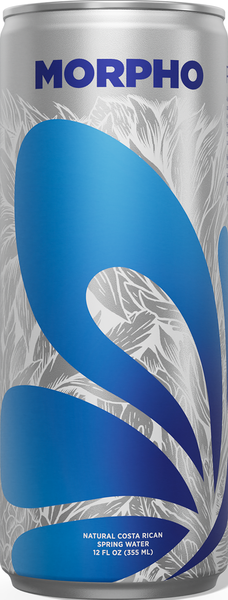
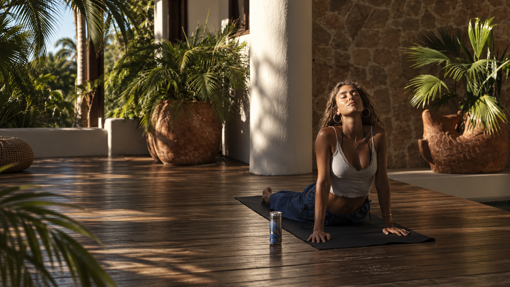
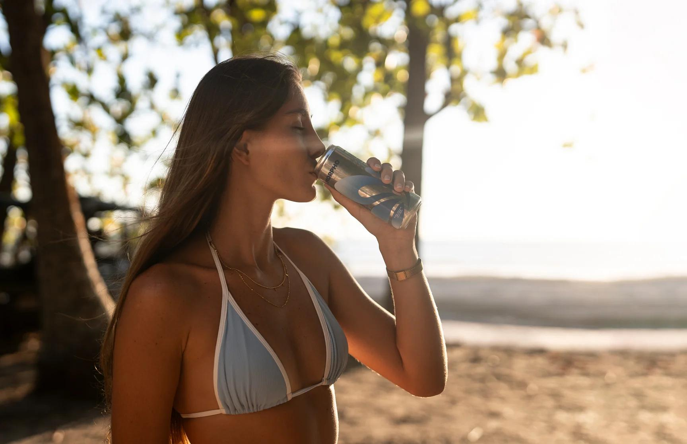
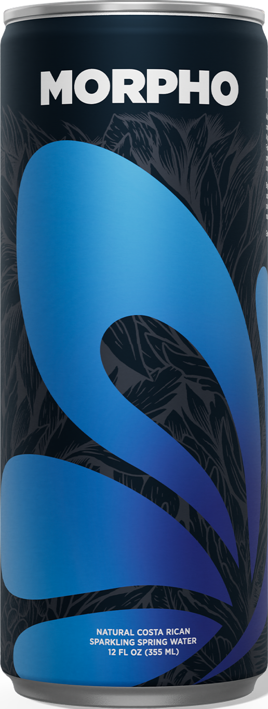

NATURAL COSTA RICAN SPRING WATER
A world
within.
Natural spring water from Costa Rica.
Pure possibility. In every sip.

FROM COSTA RICA.
INTO YOUR ELEMENT.
01 — THE FIRST MOMENT
A small click.
A world opens.
Let a little of the outside in.
02 — NATURE, UNFILTERED
Back to
what matters.
A little closer to nature.
A little closer to yourself.
03 / FEEL FREE
Follow
the feeling.
Salt on your skin. Nothing on your mind.
04 / FIND YOUR RHYTHM
Made to
move you.
One wave. A little more freedom.

05 / THE NICOYA WAY
More life.
Less hurry.
Move naturally. Breathe deeply.
The rhythm of life in Nicoya.
06 / BLUE ZONES
One world.
A different rhythm.
Okinawa
Japan
Five places. A different rhythm.
Our journey leads to Nicoya, Costa Rica.
07 / LIFE IN NICOYA
Where lives
grow longer.
Everyday movement. Shared meals.
Close connections. A sense of purpose.
08 / A SENSE OF PURPOSE
More years.
More life.
A reason to greet each day.
People to care for. Knowledge to pass on.
09 / WATER, IN ITS ELEMENT
Naturally
balanced.
In every sip.
Spring water from Costa Rica.
From the source into your glass.

10 / TAKE IT WITH YOU
Your own
kind of freedom.
A little of Nicoya. Wherever life takes you.
11 / PURITY IN MOTION
A whole world.
Inside this can.
Take Costa Rica with you.
